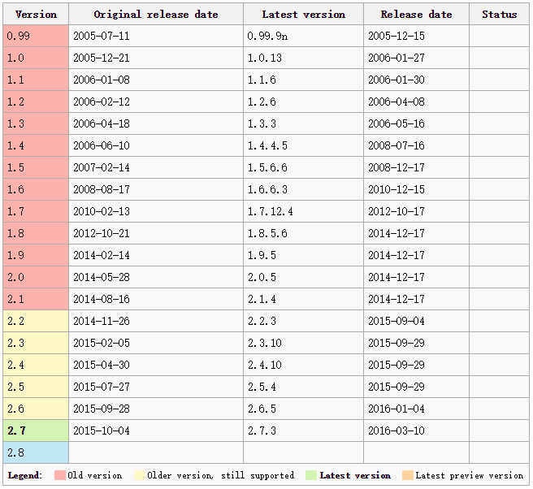

大家都在用
操作简单, 速度快
对项目没有侵入性
功能灵活, Git更像一个文件系统
Github已经成为优秀开源项目的集散地
讨论已经很多, 不再赘述, 只做总结
Git的版本发布
Git的作者是 Linus Torvalds (Linux之父)
2002年,Linux发布10年, 源码过于庞大, Linus已经不能手工管理了. 这时BitMover公司为Linux免费提供了BitKeeper工具.
2005年,越来越多的 Linux贡献者抱怨BitKeeper并尝试破解它的协议. Linus本人也跟BitMover公司闹掰(Linus是脾气出了名的差). 于是, Linus决定自己开发一个全新的代码管理工具
2005.04.08 ~ 2005.04.12, Linus仅仅用了4天, 就开发完了Git的初始版本(现已移交给社区管理). Linus自己评价,他为世界作了2个贡献, 一个是Linux, 另一个是 Git
2008年, Github上线了, 至此, 开启了一个引领开源项目潮流的新时代.
搭建Git服务器, 集中/统一的进行管理
提供Web服务, 通过浏览器即可完成大部分操作
划分开发小组, 严格的权限管理
小组成员开放权限, 灵活的代码分享
地址: http://git.9888.cn/
(当然是假地址了, 我们用的局域网)
Gitlab是开源的Git托管服务,提供本地安装版本
通过网页方便的浏览所有项目
甚至可以新建文件, 创建分支, 合并代码等等
该服务属于测试运行中, Beta版服务,
使用时请大家在本地做好备份.
如果遇到问题请联系管理员 王德龙 QQ:364761308